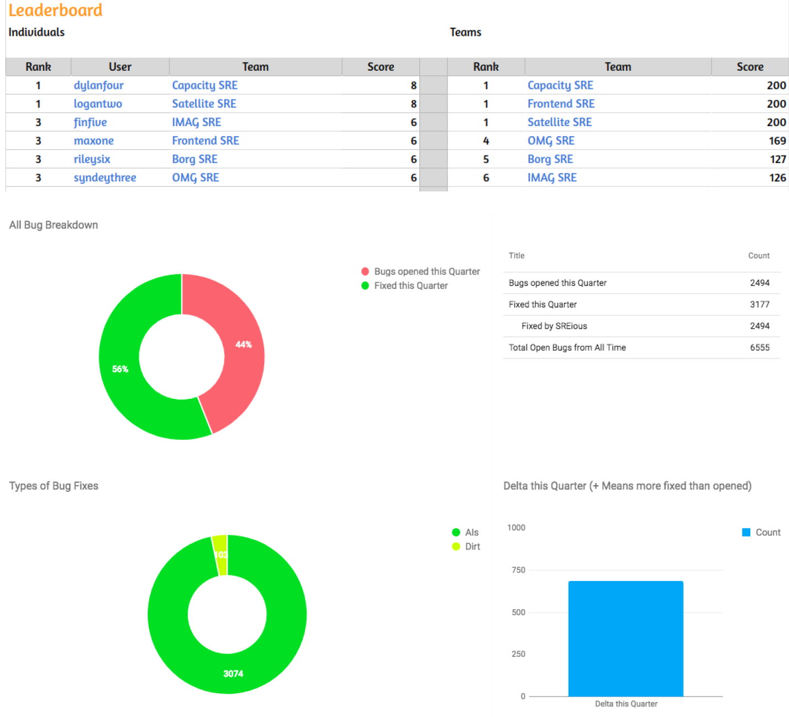
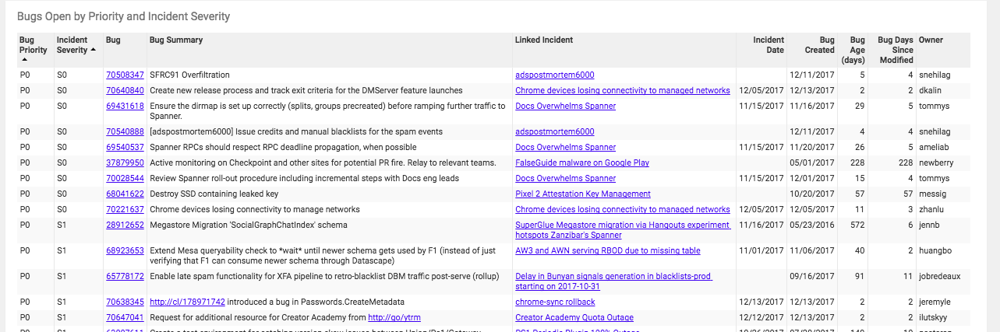
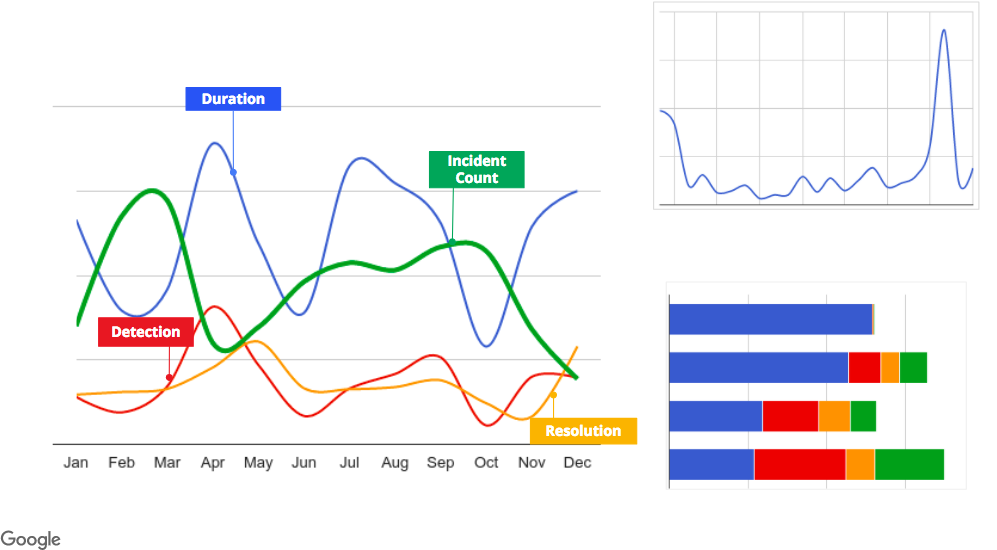

Our experience shows that a truly blameless postmortem culture results in more reliable systems—which is why we believe this practice is important to creating and maintaining a successful SRE organization.
Introducing postmortems into an organization is as much a cultural change as it is a technical one. Making such a shift can seem daunting. The key takeaway from this chapter is that making this change is possible, and needn’t seem like an insurmountable challenge. Don’t emerge from an incident hoping that your systems will eventually remedy themselves. You can start small by introducing a very basic postmortem procedure, and then reflect and tune your process to best suit your organization—as with many things, there is no one size that fits all.
When written well, acted upon, and widely shared, postmortems can be a very effective tool for driving positive organizational change and preventing repeat outages. To illustrate the principles of good postmortem writing, this chapter presents a case study of an actual outage that happened at Google. An example of a poorly written postmortem highlights the reasons why “bad” postmortem practices are damaging to an organization that’s trying to create a healthy postmortem culture. We then compare the bad postmortem with the actual postmortem that was written after the incident, highlighting the principles and best practices of a high-quality postmortem.
The second part of this chapter shares what we’ve learned about creating incentives for nurturing of a robust postmortem culture and how to recognize (and remedy) the early signs that the culture is breaking down.
Finally, we provide tools and templates that you can use to bootstrap a postmortem culture.
For a comprehensive discussion on blameless postmortem philosophy, see Chapter 15 in our first book, Site Reliability Engineering.
This case study features a routine rack decommission that led to an increase in service latency for our users. A bug in our maintenance automation, combined with insufficient rate limits, caused thousands of servers carrying production traffic to simultaneously go offline.
While the majority of Google’s servers are located in our proprietary datacenters, we also have racks of proxy/cache machines in colocation facilities (or “colos”). Racks in colos that contain our proxy machines are called satellites. Because satellites undergo regular maintenance and upgrades, a number of satellite racks are being installed or decommissioned at any point in time. At Google, these maintenance processes are largely automated.
The decommission process overwrites the full content of all drives in the rack using a process we call diskerase. Once a machine is sent to diskerase, the data it once stored is no longer retrievable. The steps for a typical rack decommission are as follows:
# Get all active machines in "satellite"
machines = GetMachines(satellite)
# Send all candidate machines matching "filter" to decom
SendToDecom(candidates=GetAllSatelliteMachines(),
filter=machines)
Our case study begins with a satellite rack that was marked for decommissioning. The diskerase step of the decommission process finished successfully, but the automation responsible for the remainder of the machine decommission failed. To debug the failure, we retried the decommission process. The second decommission ran as follows:
# Get all active machines in "satellite"
machines = GetMachines(satellite)
# "machines" is an empty list, because the decom flow has already run.
# API bug: an empty list is treated as "no filter", rather than "act on no
# machines"
# Send all candidate machines matching "filter" to decom
SendToDecom(candidates=GetAllSatelliteMachines(),
filter=machines)
# Send all machines in "candidates" to diskerase.
Within minutes, the disks of all satellite machines, globally, were erased. The machines were rendered inert and could no longer accept connections from users, so subsequent user connections were routed directly to our datacenters. As a result, users experienced a slight increase in latency. Thanks to good capacity planning, very few of our users noticed the issue during the two days it took us to reinstall machines in the affected colo racks. Following the incident, we spent several weeks auditing and adding more sanity checks to our automation to make our decommission workflow idempotent.
Three years after this outage, we experienced a similar incident: a number of satellites were drained, resulting in increased user latency. The action items implemented from the original postmortem dramatically reduced the blast radius and rate of the second incident.
Suppose you were the person responsible for writing the postmortem for this case study. What would you want to know, and what actions would you propose to prevent this outage from happening again?
Let’s start with a not-so-great postmortem for this incident.
The example “bad” postmortem contains a number of common failure modes that we try to avoid. The following sections explain how to improve upon this postmortem.
From the outset, our example postmortem introduces terminology that’s specific to traffic serving (e.g., “satellites”) and lower layers of machine management automation at Google (e.g., “diskerase”). If you need to provide additional context as part of the postmortem, use the Background and/or Glossary sections (which can link to longer documents). In this case, both sections were blank.
If you don’t properly contextualize content when writing a postmortem, the document might be misunderstood or even ignored. It’s important to remember that your audience extends beyond the immediate team.
Multiple sections contain high-level summaries but lacked important details. For example:
For outages affecting multiple services, you should present numbers to give a consistent representation of impact. The only numerical data our example provides is the duration of the problem. We don’t have enough details to estimate the size or impact of the outage. Even if there is no concrete data, a well-informed estimate is better than no data at all. After all, if you don’t know how to measure it, then you can’t know it’s fixed!
Identifying the root causes and trigger is one of the most important reasons to write a postmortem. Our example contains a small paragraph that describes the root causes and trigger, but it doesn’t explore the lower-level details of the issue.
A postmortem acts as the record of an incident for its readers. A good postmortem will let readers know what happened, how the issue was mitigated, and how users were impacted. The answers to many of these questions are typically found in the Recovery Efforts section, which was left empty in our example.
If an outage merits a postmortem, you should also take the time to accurately capture and document the necessary details. The reader should get a complete view of the outage and, more importantly, learn something new.
The Action Items (AIs) section of our example is missing the core aspects of an actionable plan to prevent recurrence. For example:
The action items are mostly mitigative. To minimize the likelihood of the outage recurring, you should include some preventative action items and fixes. The one “preventative” action item suggests we “make humans less error-prone.” In general, trying to change human behavior is less reliable than changing automated systems and processes. (Or as Dan Milstein once quipped: “Let’s plan for a future where we’re all as stupid as we are today.”)
All of the action items have been tagged with an equal priority. There’s no way to determine which action to tackle first.
The first two action items in the list use ambiguous phrases like “Improve” and “Make better.” These terms are vague and open to interpretation. Using unclear language makes it difficult to measure and understand success criteria.
Only one action item was assigned a tracking bug. Without a formal tracking process, action items from postmortems are often forgotten, resulting in outages.
In the words of Ben Treynor Sloss, Google’s VP for 24/7 Operations: “To our users, a postmortem without subsequent action is indistinguishable from no postmortem. Therefore, all postmortems which follow a user-affecting outage must have at least one P[01] bug associated with them. I personally review exceptions. There are very few exceptions.”
Every postmortem has the potential to lapse into a blameful narrative. Let’s take a look at some examples:
The entire team is blamed for the outage, while two members (maxone@ and logantwo@) are specifically called out.
The last item in the list targets sydneythree@ for succumbing to pressure and mismanaging the cross-site handoff.
dylanfour@ is held solely responsible for the outage.
It may seem like a good idea to highlight individuals in a postmortem. Instead, this practice leads team members to become risk-averse because they’re afraid of being publicly shamed. They may be motivated to cover up facts critical to understanding and preventing recurrence.
A postmortem is a factual artifact that should be free from personal judgments and subjective language. It should consider multiple perspectives and be respectful of others. Our example postmortem contains multiple examples of undesirable language:
Superfluous language (e.g., “careless ignorance”)
Animated text (e.g., “which is ridiculous”)
An exclamation of disbelief (e.g., “I can’t believe we survived this one!!!”)
Animated language and dramatic descriptions of events distract from the key message and erode psychological safety. Instead, provide verifiable data to justify the severity of a statement.
Declaring official ownership results in accountability, which leads to action. Our example postmortem contains several examples of missing ownership:
The postmortem lists four owners. Ideally, an owner is a single point of contact who is responsible for the postmortem, follow-up, and completion.
The Action Items section has little or no ownership for its entries. Actions items without clear owners are less likely to be resolved.
It’s better to have a single owner and multiple collaborators.
Our example postmortem was shared only among members of the team. By default, the document should have been accessible to everyone at the company. We recommend proactively sharing your postmortem as widely as possible—perhaps even with your customers. The value of a postmortem is proportional to the learning it creates. The more people that can learn from past incidents, the less likely they are to be repeated. A thoughtful and honest postmortem is also a key tool in restoring shaken trust.
As your experience and comfort grows, you will also likely expand your “audience” to nonhumans. Mature postmortem cultures often add machine-readable tags (and other metadata) to enable downstream analytics.
This is an actual postmortem. In some cases, we fictionalized names of individuals and teams. We also replaced actual values with placeholders to protect sensitive capacity information. In the postmortems that you create for your internal consumption, you should absolutely include specific numbers!
This postmortem exemplifies several good writing practices.
The postmortem is well organized and explains key terms in sufficient detail. For example:
A well-written glossary makes the postmortem accessible and comprehensible to a broad audience.
This was a large incident with many action items. Grouping action items by theme makes it easier to assign owners and priorities.
The postmortem presents useful data on the incident, such as cache hit ratios, traffic levels, and duration of the impact. Relevant sections of the data are presented with links back to the original sources. This data transparency removes ambiguity and provides context for the reader.
A postmortem with no action items is ineffective. These action items have a few notable characteristics:
All action items are assigned a priority level.
The action items have a verifiable end state (e.g., “Add an alert when more than X% of our machines have been taken away from us”).
Each action item “theme” has Prevent/Mitigate action items that help avoid outage recurrence (for example, “Disallow any single operation from affecting servers spanning namespace/class boundaries”).
Rather than only investigating the proximate area of the system failure, the postmortem explores the impact and system flaws across multiple teams. Specifically:
This section contains lots of details from various perspectives, making it balanced and objective.
This section performs a deep dive on the incident and arrives at a root cause and trigger.
All of the conclusions presented are based on facts and data. Any data used to arrive at a conclusion is linked from the document.
These present further useful information in the form of graphs. Graphs are explained to give context to readers who aren’t familiar with the system.
The postmortem was written and circulated less than a week after the incident was closed. A prompt postmortem tends to be more accurate because information is fresh in the contributors’ minds. The people who were affected by the outage are waiting for an explanation and some demonstration that you have things under control. The longer you wait, the more they will fill the gap with the products of their imagination. That seldom works in your favor!
The incident was a global one, impacting multiple systems. As a result, the postmortem recorded and subsequently parsed a lot of data. Lengthy data sources, such as chat transcripts and system logs, were abstracted, with the unedited versions linked from the main document. Overall, the postmortem strikes a balance between verbosity and readability.
Ideally, senior leadership should support and encourage effective postmortems. This section describes how an organization can incentivize a healthy postmortem culture. We highlight warning signs that the culture is failing and offer some solutions. We also provide tools and templates to streamline and automate the postmortem process.
To properly support postmortem culture, engineering leaders should consistently exemplify blameless behavior and encourage blamelessness in every aspect of postmortem discussion. You can use a few concrete strategies to enforce blameless behavior in an organization.
Blameful language stifles collaboration between teams. Consider the following scenario:
Sandy missed a service Foo training and wasn’t sure how to run a particular update command. The delay ultimately prolonged an outage.
SRE Jesse [to Sandy’s manager]: “You’re the manager; why aren’t you making sure that everyone finishes the training?”
The exchange includes a leading question that will instantly put the recipient on the defensive. A more balanced response would be:
SRE Jesse [to Sandy’s manager]: “Reading the postmortem, I see that the on-caller missed an important training that would have allowed them to resolve the outage more quickly. Maybe team members should be required to complete this training before joining the on-call rotation? Or we could remind them that if they get stuck to please quickly escalate. After all, escalation is not a sin—especially if it helps lower customer pain! Long term, we shouldn’t really rely so much on training, as it’s easy to forget in the heat of the moment.”
A clear review process and communication plan for postmortems can help prevent blameful language and perspectives from propagating within an organization. For a suggested structured review process, see the section “Postmortem checklist”.
When well written, acted upon, and widely shared, postmortems are an effective vehicle for driving positive organizational change and preventing repeat outages. Consider the following strategies to incentivize postmortem culture.
Over time, an effective postmortem culture leads to fewer outages and more reliable systems. As a result, teams can focus on feature velocity instead of infrastructure patching. It’s intrinsically motivating to highlight these improvements in reports, presentations, and performance reviews.
Celebrating postmortems through emails or meetings, or by giving the authors an opportunity to present lessons learned to an audience, can appeal to individuals that appreciate public accolades. Setting up the owner as an “expert” on a type of failure and its avoidance can be rewarding for many engineers who seek peer acknowledgment. For example, you might hear someone say, “Talk to Sara, she’s an expert now. She just coauthored a postmortem where she figured out how to fix that gap!”
Some individuals are incentivized by a sense of accomplishment and progress toward a larger goal, such as fixing system weaknesses and increasing reliability. For these individuals, a scoreboard or burndown of postmortem action items can be an incentive. At Google, we hold “FixIt” weeks twice a year. SREs who close the most postmortem action items receive small tokens of appreciation and (of course) bragging rights. Figure 10-3 shows an example of a postmortem leaderboard.

The breakdown of postmortem culture may not always be obvious. The following are some common failure patterns and recommended solutions.
Disengaging from the postmortem process is a sign that postmortem culture at an organization is failing. For example, suppose SRE Director Parker overhears the following conversation:
SWE Sam: Wow, did you hear about that huge blow-up?
SWE Riley: Yeah, it was terrible. They’ll have to write a postmortem now.
SWE Sam: Oh no! I’m so glad I’m not involved with that.
SWE Riley: Yeah, I really wouldn’t want to be in the meeting where that one is discussed.
Ensuring that high-visibility postmortems are reviewed for blameful prose can help prevent this kind of avoidance. In addition, sharing high-quality examples and discussing how those involved were rewarded can help reengage individuals.
Responding when a senior executive uses blameful language can be challenging. Consider the following statement made by senior leadership at a meeting about an outage:
VP Ash: I know we are supposed to be blameless, but this is a safe space. Someone must have known beforehand this was a bad idea, so why didn’t you listen to that person?
Mitigate the damage by moving the narrative in a more constructive direction. For example:
SRE Dana: Hmmm, I’m sure everyone had the best intent, so to keep it blameless, maybe we ask generically if there were any warning signs we could have heeded, and why we might have dismissed them.
Individuals act in good faith and make decisions based on the best information available. Investigating the source of misleading information is much more beneficial to the organization than assigning blame. (If you have encountered Agile principles, this should be familiar to you.)
Quality postmortems take time to write. When a team is overloaded with other tasks, the quality of postmortems suffers. Subpar postmortems with incomplete action items make a recurrence far more likely. Postmortems are letters you write to future team members: it’s very important to keep a consistent quality bar, lest you accidentally teach future teammates a bad lesson. Prioritize postmortem work, track the postmortem completion and review, and allow teams adequate time to implement the associated action plan. The tooling we discuss in the section “Tools and Templates” can help with these activities.
If teams are experiencing failures that mirror previous incidents, it’s time to dig deeper. Consider asking questions like:
Are action items taking too long to close?
Is feature velocity trumping reliability fixes?
Are the right action items being captured in the first place?
Is the faulty service overdue for a refactor?
Are people putting Band-Aids on a more serious problem?
If you uncovered a systemic process or technical problem, it’s time to take a step back and consider the overall service health. Bring the postmortem collaborators from each similar incident together to discuss the best course of action to prevent repeats.
A set of tools and templates can bootstrap a postmortem culture by making writing postmortems and managing the associated data easier. There are a number of resources from Google and other companies that you can leverage in this space.
Templates make it easier to write complete postmortems and share them across an organization. Using a standard format makes postmortems more accessible for readers outside the domain. You can customize the template to fit your needs. For example, it may be useful to capture team-specific metadata like hardware make/model for a datacenter team, or Android versions affected for a mobile team. You can then add customizations as the team matures and performs more sophisticated postmortems.
Google has shared a version of our postmortem template in Google Docs format at http://g.co/SiteReliabilityWorkbookMaterials. Internally, we primarily use Docs to write postmortems because it facilitates collaboration via shared editing rights and comments. Some of our internal tools prepopulate this template with metadata to make the postmortem easier to write. We leverage Google Apps Script to automate parts of the authoring, and capture a lot of the data into specific sections and tables to make it easier for our postmortem repository to parse out data for analysis.
As of this writing, Google’s postmortem management tooling is not available for external use (check our blog for the latest updates). We can, however, explain how our tools facilitate postmortem culture.
Our incident management tooling collects and stores a lot of useful data about an incident and pushes that data automatically into the postmortem. Examples of data we push includes:
Incident Commander and other roles
Detailed incident timeline and IRC logs
Services affected and root-cause services
Incident severity
Incident detection mechanisms
To help authors ensure a postmortem is properly completed, we provide a postmortem checklist that walks the owner through key steps. Here are just a few example checks on the list:
Perform a complete assessment of incident impact.
Conduct sufficiently detailed root-cause analysis to drive action item planning.
Ensure action items are vetted and approved by the technical leads of the service.
Share the postmortem with the wider organization.
The full checklist is available at http://g.co/SiteReliabilityWorkbookMaterials.
We store postmortems in a tool called Requiem so it’s easy for any Googler to find them. Our incident management tool automatically pushes all postmortems to Requiem, and anyone in the organization can post their postmortem for all to see. We have thousands of postmortems stored, dating back to 2009. Requiem parses out metadata from individual postmortems and makes it available for searching, analysis, and reporting.
Our postmortems are stored in Requiem’s database. Any resulting action items are filed as bugs in our centralized bug tracking system. Consequently, we can monitor the closure of action items from each postmortem. With this level of tracking, we can ensure that action items don’t slip through the cracks, leading to increasingly unstable services. Figure 10-4 shows a mockup of postmortem action item monitoring enabled by our tooling.

Our postmortem management tool stores its information in a database for analysis. Teams can use the data to write reports about their postmortem trends and identify their most vulnerable systems. This helps us uncover underlying sources of instability or incident management dysfunctions that may otherwise go unnoticed. For example, Figure 10-5 shows charts that were built with our analysis tooling. These charts show us trends like how many postmortems we have per month per organization, incident mean duration, time to detect, time to resolve, and blast radius.

Here are some third-party tools that can help you create, organize, and analyze postmortems:
Although it’s impossible to fully automate every step of writing postmortems, we’ve found that postmortem templates and tooling make the process run more smoothly. These tools free up time, allowing authors to focus on the critical aspects of the postmortem, such as root-cause analysis and action item planning.
Ongoing investment in cultivating a postmortem culture pays dividends in the form of fewer outages, a better overall experience for users, and more trust from the people that depend on you. Consistent application of these practices results in better system design, less downtime, and more effective and happier engineers. If the worst does happen and an incident recurs, you will suffer less damage and recover faster and have even more data to continue reinforcing production.